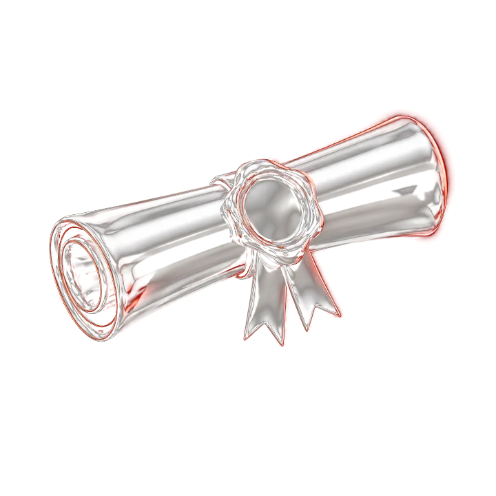
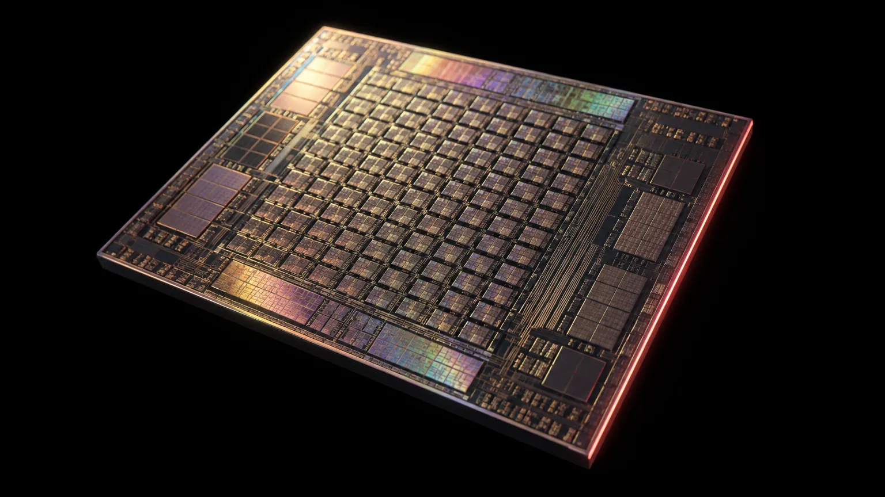
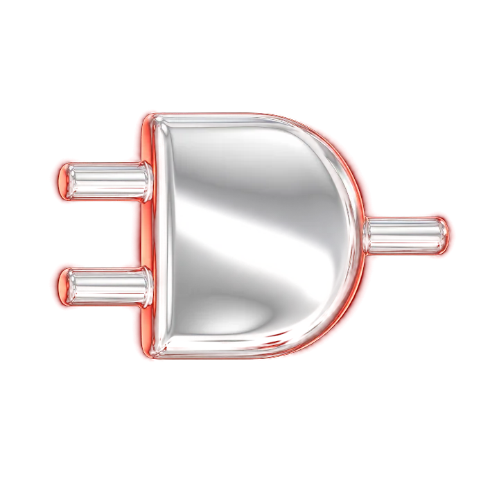
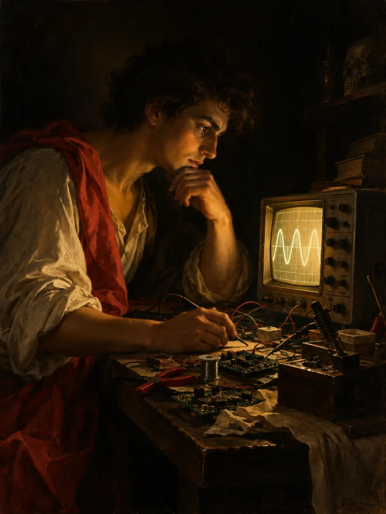

One spec
Every design starts from the written specification. Where the spec leaves a choice open, I make it explicit in code: mxgold names every open choice as a policy, from RoundingMode to ScaleSelection.

Scroll to take the chip apart
Tools of the trade


I'm Chinmay, a hardware engineer who verifies before he trusts. I write golden models, then make RTL agree with them, bit for bit. Every number on this page comes from a repo you can open and run.
Read my resumeFrom Bengaluru to Seattle
RTL that does what the spec says, testbenches that prove it, and a flow that carries it to GDSII. Self-checking from the first line, so a green result means something.
See the work
(My method is as simple as 1… 2… 3…)

Every design starts from the written specification. Where the spec leaves a choice open, I make it explicit in code: mxgold names every open choice as a policy, from RoundingMode to ScaleSelection.
A golden model written from scratch, independent of the RTL, and then the RTL itself. The RV32I core is checked against a Python interpreter that is not a port of the hardware.
Directed tests, constrained-random tests, and CI on every push. The systolic array's 206-case random suite fails on a coverage hole as well as on a mismatch.
A specification says what hardware should do. RTL says what it actually does. Verification is where the two are introduced, and where every disagreement is found while it is still cheap to fix.
That is the work I want to do: write the model that defines correct, then make the hardware agree with it.
Talk to meOutputs look plausible, nobody compares them bit for bit, and the bug ships.
Hours of scrolling traces with no reference for what the value should have been.
A test that ran green on one seed, one day, on one machine.
Every output compared against a golden model, bit for bit, never by eye.
Testbenches fail loudly on a mismatch, and on a coverage hole too.
CI reruns every check on every commit, so green stays green.
Each project broken into the files and modules that do the work. Diagrams draw as you scroll.
Index
A bit-exact golden reference for OCP Microscaling arithmetic at the operation layer: scaled blocks, dot products and accumulators, not just single-element encode and decode.
policy.pyMakes the spec's open choices explicit: OverflowPolicy, RoundingMode, SubnormalPolicy, AccumulationOrder, ScaleSelection.
formats.pyElement formats E4M3, E5M2, E2M1 and INT8, plus E8M0 scales. encode() returns raw bit patterns, so −0.0 and NaN payloads stay distinct.
block.pyBlock formats MXFP8, MXFP4 and NVFP4: select_scale, quantize_block, dot_product with a clamped accumulator, and fma.
test_conformance.py43 checks, run by GitHub Actions on Python 3.10 to 3.13. Unconfirmed readings are tagged [UNVERIFIED] in the code.
E4M3 overflow: saturate to 448.0 or produce NaN. Both conform.
MXFP4 vs NVFP4: same element bits, different block size and scale encoding.
Scale selection is unspecified. Not previously documented.
1 of 16 elements zeroed, relative error 0.0000
Cells show the count, not element positions.
A 4-stage pipelined RV32I subset core with forwarding, load-use stalling and branch squashing, verified against a from-scratch golden model and signed off to GDSII.
riscv_core.vPipeline registers, forwarding muxes, the hazard unit and branch resolution in EX.
alu.vregfile.vADD, SUB, AND, OR, XOR, SLL, SRL, SLT and immediates; 32-entry register file.
imem.vdmem.vHarvard memories: instruction ROM via $readmemh, data RAM with synchronous write.
golden_model.pytb_riscv_core.vA from-scratch RV32I interpreter, not a port of the RTL, checks final registers for programs that each target one hazard.
RESULTS.md. The failed one stays in the repo.333 MHz: passed.
An output-stationary MAC array built up from one processing element, extended into a weight-stationary INT8 CNN accelerator: Conv1, Conv2 and FC chained through requantization.
rtl/pe.vtb_systolic.v, test 1, array at 4 × 4Regenerated with Icarus Verilog from the repo; all 20 tests pass. Drag to read values: acc adds a_in × b_in on each clock, and a_in reaches PE(0,1) one clock later.
top_accelerator.v: one start, one donemac_en had to lag the tap index by two cycles. With one delay stage, 124 of 144 Conv1 outputs mismatched the golden model.124 of 144 outputs mismatched
A team project for EECE 7370, Advanced Computer Vision. My part was integrating the trained model into the app interface, highlighted in the diagram.
Team results from the repo: about 95.5% top-1 on 22 test photos across 558 cards, about 200 ms per inference.
Open pokemon-card-scanner on GitHubMine, alternating with the people who said it first and better. Each of mine points to the repo that keeps me honest.

My INT8 accelerator chains Conv1, Conv2 and a fully connected layer, each checked bit-exact against a Python golden model.
When Conv1 first ran in RTL, 124 of its 144 outputs disagreed with the golden model.
The arithmetic was right. The timing was not. The ROM reads and the controller's address outputs were both registered, so the MAC enable had to lag the tap index by two cycles. I had given it one.
I found it by diffing waveforms against per-tap golden accumulator values, one tap at a time.
One more delay stage, and Conv1 matched. Then Conv2. Then the whole chain: 20 of 20 samples bit-exact from raw image to final logits, matching the FP32 baseline accuracy of 90%.
The recipe never changes: a golden model, a waveform, and the patience to read both.
Early January 2027, for a Spring 2027 co-op. Summer 2027 internships too.
Four, six or eight months.
Seattle, and open to relocating anywhere in the US.
December 2027, MS in Electrical and Computer Engineering.
UVM, working toward a UVM testbench for an asynchronous FIFO.
Every project here is a public repo, with CI you can rerun yourself.
For a successful technology, reality must take precedence over public relations, for nature cannot be fooled.